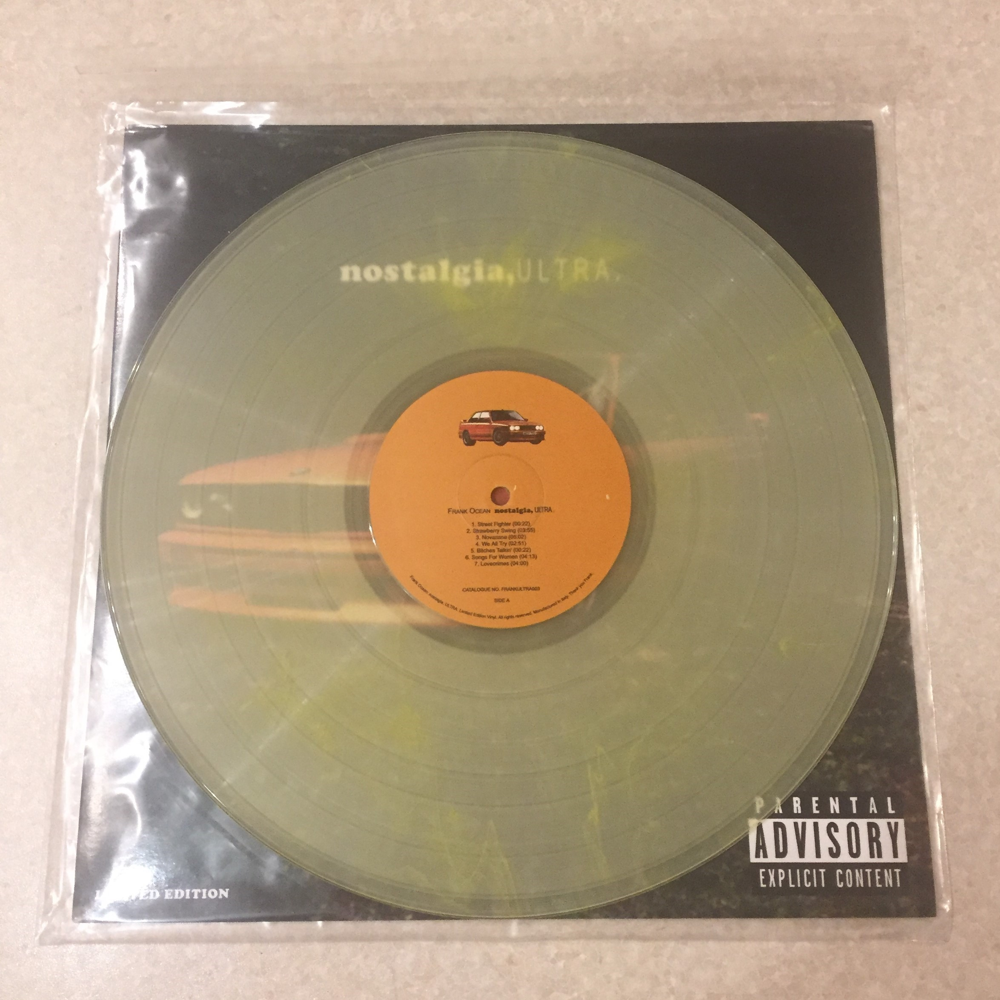
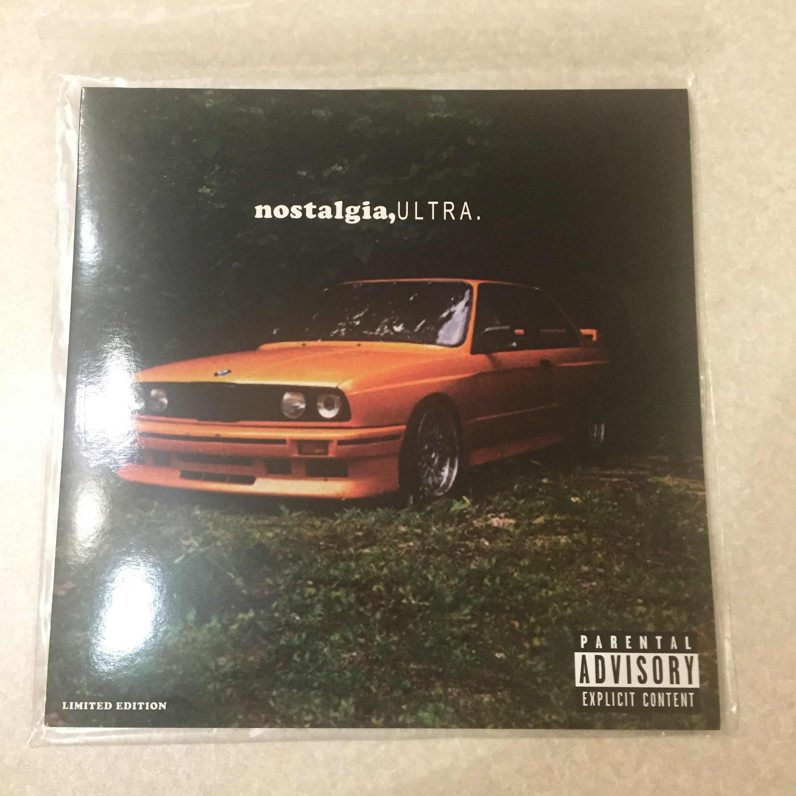
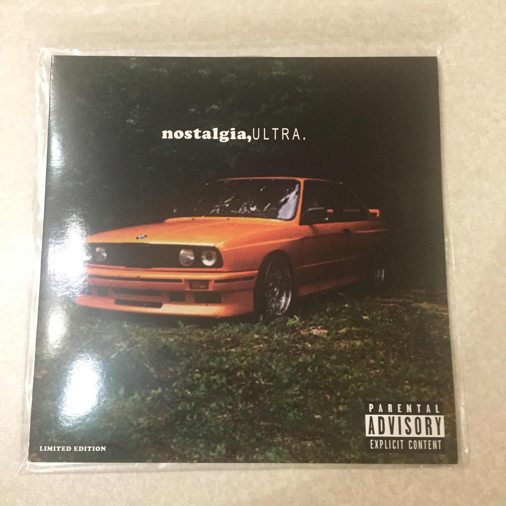

2010/2011 - Nostalgia, Ultra
After being signed to Def Jam, Frank soon found out the label had no interest in him and didn't want to give him the neccesary funds to record music and later said he felt neglected by Def Jam, even Trickey Stewart said it wasn't the right call on his part, and the label couldn't get behind Frank the same way he was. So in 2011, Frank made the decision to begin a 7 year chess game to work his way out of his record deal that would see him Finess the record label of a reported 20 million dollars, but we'll get to that later.
Frank decided to take some inspiration from his friends at Odd Future and decided to put out his own mixtape to stir hype and create an audience all independantly. So on the 26th of Febuary 2011, Frank released his mixtape "Nostalgia, Ultra", which became a smash hit globally with 0 promotion, and now Def Jam are interested. They decide to release 2 singles off the mixtape, "Novacane" and "Swim Good", which hit #82 and #70 on the Billboard top 100. Listen to the tracks here to find out why they charted so fast!
Nostalgia, Ultra was met with immediate acclaim, featuring samples from Coldplay MGMT and radiohead, Frank's biggest influences and his favourite bands from a young age. The mixtape was praised for Frank's songwriting that focused on personal reflection, social commentary and Frank's past relationships("Understanding Frank Ocean", video essay by Volksgeist).
Unfortunately becuase almost every track on the album was full of samples, Def Jam weren't able to clear it for a commercial release because of too many expensive and unclearable samples like Hotel California by the Eagles on the song American Wedding. Fortunately, the community has been able to create physical copies of the album and I actually own a pressing of Nostagia, Ultra on vinyl and it's probably my favourite record that I own, the sound of Frank's voice is amazing, and I love the clear orange pressing of the record along with the artwork!

 


Now that Def Jam were eager to work with Frank after neglecting for nearly 2 years, Frank got knew he had them just where he wanted them, and was ready to begin the next stage of his chess game, his debut commercial album, Channel Orange.